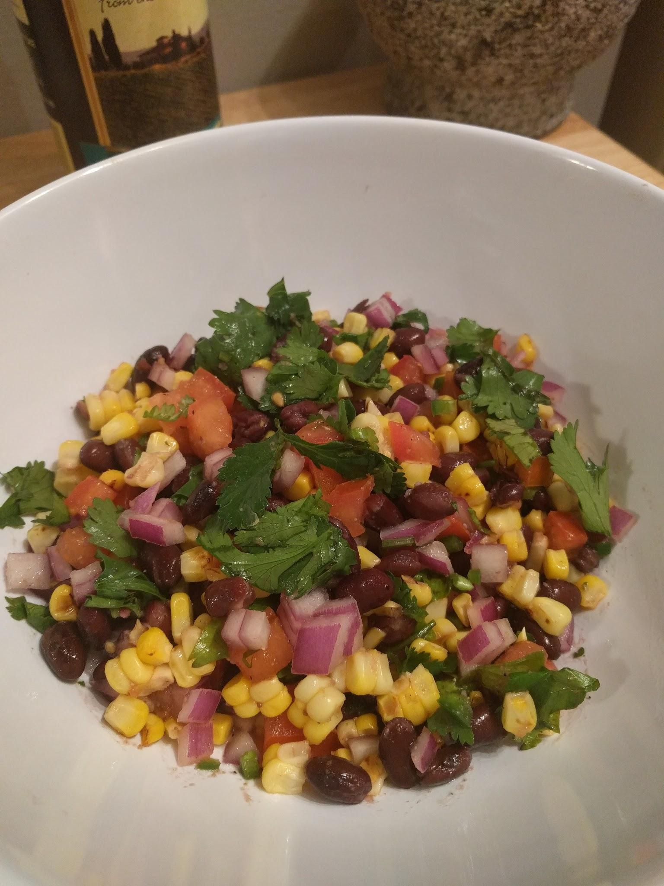

Chicken Enchiladas with Corn & Black Bean Salsa for Two

These chicken enchiladas are pretty easy to make; but, like with most good food, you’ll need time and patience. It’s the little things in recipes that make a difference, like in this recipe caramelizing the onions until they charred slightly made for the perfect balance of sweet when mixed with the chicken, and boiling the corn in butter and salt to make the final salsa buttery and sweet, and just perfect with a good squeeze of lime. Or if you want a more “roasty” flavor, grill the corn and as it’s piping on the grill squeeze a lime over it and melt a big blob of butter over the cob. Either way you do the corn, nothing can compare to how good the resulting salsa pairs with the luscious, cheesy, zesty, meaty enchiladas smothered with a cream cheese sauce blended with pureed mild green chillies and baked in a well-seasoned cast iron pan, and don’t forget the copious amounts of lime (seriously, I used about two limes just for the sauce, but it was totally worth it). Another thing, if you’re on a diet you’ll probably want to avoid this recipe; it’s heavy on the fat, but hey it’s good to indulge every now and then. The only thing that would make this meal any better would be a homemade margarita, en serio
Ingredients :
For the Chicken :
2-3 chicken breasts
½ a red onion, thinly sliced and caramelized
1 tbsp cumin
½ tbsp paprika
½ tbsp oregano
½ tbsp garlic powder
½ tbsp ground coriander (optional)
Salt and pepper to taste
Lime juice (for final seasoning in pan)
For the Sauce :
1 block of full fat cream cheese
1 small heavy cream
1 small can green chilies, pureed in a blender (to better incorporate in the sauce)
1-2 limes to taste
Salt to taste, no pepper (unless you want to)
For the Salsa :
1 cob of roasted, grilled, or butter-boiled corn, kernels shaved off when cooked and cooled
½ can rinsed and drained unseasoned black beans
½ a small red onion, thinly diced
1 small, **firm** roma tomato (trust me, a firm tomato makes for a less juicy salsa, and in turn leaves the flavors pure and unmuddied by any excess juices. . . . . other than the lime juice of course)
½ a jalapeno, thinly diced
⅓-¼ cup of roughly chopped cilantro
1 squeezed lime
Salt to taste
You could also add a touch of cumin and paprika to the salsa for a slightly roasty taste.
The How-To :
First boil, roast, or grill your cob of corn. Whatever method of cooking you use, just make sure you squeeze that lime and melt that butter over it. You want to cook your corn first so that it has time to cool before you handle it.
Next, caramelize your red onion slices over medium-low heat until tender and brown, this should take anywhere from 15-20 minutes, but be patient! It’s worth the time. Remove the onions, then take your seasoned chicken and sear on high heat in the same pan you plan on making your sauce in. Once your chicken is nice and crusty on the outside, lower the heat to medium low, squeeze lime over the breasts, and cover to cook on **medium-low *heat for about 10 minutes. Tip : Make sure you have a nice hot sear on your meat before you lower the heat, the sear is key to trapping in the chicken’s moisture. Don’t be afraid of the high heat! It’s not permanent.
Remove your chicken to rest and cool on a cutting board. Add the pureed green chillies to your chicken pan and all it’s chickeny goodness and saute for a bit, then squeeze your lime over the chilis, and liberally salt the mixture.
Finally, for the sauce, cut the cream cheese into chunks (it speeds up the melting process) and add the cheese to the chili-lime mixture. When the cheese is all melted it will be quite thick; that’s where the heavy cream comes in. Pour the cream in until the sauce meets your desired thickness. If necessary add a bit of plain milk. I tend to use the entire container of heavy cream because I like my sauce somewhat runny (for good reason!) because when it bakes it tends to thicken. Melt the cheese, cream, chili, and lime together and while it incorporates start your salsa.
Oh! I forgot, preheat your oven to 350 :D Oops Forgot that little piece of info
For the salsa, shave the corn off its cob and toss it into a mixing bowl, thinly dice your red onion, jalapeno, and tomato, and roughly chop your cilantro, then rinse ½ cup of unseasoned black beans under cold water, and add all this to your hopefully beautiful corn and mix until evenly incorporated. Squeeze a good amount of lime over the forming salsa and season with salt, and a bit of cumin and paprika, if you so desire. Put aside to top the enchiladas later.
By now, your chicken should be well-rested and cooled, shred it as finely as you can and mix it with the caramelized red onions. Steam about 4-5 tortillas (in the microwave or lightly in the oven; I cheated and used the microwave) and liberally fill each one with the chicken mixture. Fold each one as they come and settle them in the pan into the sauce. Once the pan is full try to spoon a bit of the cheese sauce over the enchiladas then pour some salsa verde (you can usually find a good quality store bought salsa verde) directly down the middle of the enchiladas, top with a cheese of your choice and pop them in the oven.
Bake them bitches for about 10-15 minutes, or until the sauce is bubbling around the enchiladas and the tortillas are nice and toasty around the edges. Remove them from the oven to cool for a bit, then profusely top them with your beautiful salsa.
Serve hot, hopefully with a margarita.